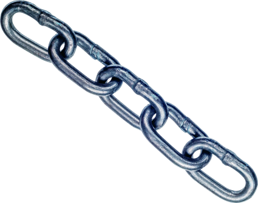

----------------------------------------------------------Mnemotechniki-----------------------------------------------------------------
- Technika domu
Technika ta polega na ustalaniu skojarzeń bazując na rutynowych czynnościach domowych.
Każdą czynność kojarzymy z następnym elementem do zapamiętania.
Powiedzmy, że musimy zapamiętać kilku prezydentów panujących po sobie.
Pierwszego z nich kojarzymy z przedpokojem,zdejmowaniem ubrań i ściąganiem butów.
Drugiego Prezydenta z łazienką, Myciem rąk.
Tak zapamiętujemy wszystkie liczby. W momencie, kiedy będą nam one potrzebne wyonrażamy sobie,że wchodzimy do domu. Każda kolejna czynność przypomni nam następną liczbę.
- Technika wierszyków
W tej metodzie będziemy układać wierszyki, z pierwszych liter wyrazów, albo rymujące się z nimi
Idealnie sprawdza się ona np. przy zapamiętywaniu liczb rzymskich. Na początek ustawiamy je rosnąco: 50,100,500,1000.
Zapis tych liczb wygląda następujądco: L,C,D,M. Układamy teraz z nich jakiś prosty do zapamiętania wierszyk np.
"Lecą Cegły Dom Murują".
Albo odkrycie Ameryki przez Krzysztofa Kolumba w 1492 roku: Jeden, cztery, dziewięć, dwa, Kolumb w długą drogę gna.

- Łańcuchowa metoda skojarzeń
To metoda, w której elementy do zapamiętania, łączymy w wyobraźni w całość, w wyniku czego powstaje łańcuch skojarzeń.
Powiedzmy, że chcemy zapamiętac listę zakupów do zrobienia.
Układamy w głowie historyjkę. np.: Gdy chciałem wziąć sobie banana, poślizgnąłem się na maśle, leżącym na podłodze.
Kiedy chciałem wytrzeć podłogę zorientowałem się, że skończył się papier w kuchni.
Kiedy zapamiętamy tą historyjkę będziemy wiedzieć, że musimy kupić banany, masło i papier.